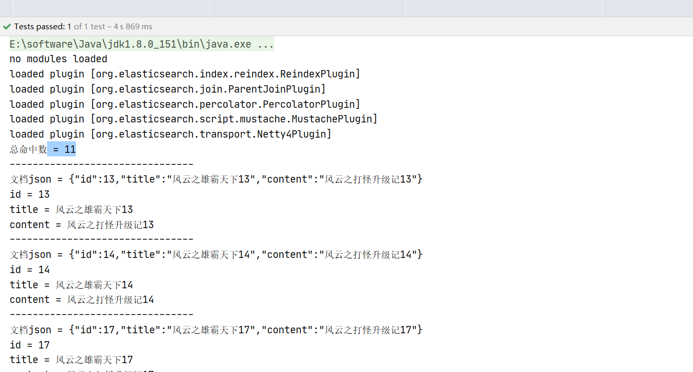

Elasticsearch简述
分布式全文搜索服务Elasticsearch
课程目标
目标1: 掌握 ElasticSearch 的特点与优势
目标2: 掌握 ElasticSearch 安装
目标3: 掌握 ElasticSearch 相关概念
目标4: 掌握 ElasticSearch IK分词器集成应用
目标5: 掌握 创建/删除索引 的代码实现
目标6: 掌握 创建索引映射 的代码实现
目标7: 掌握 文档增删改查 的代码实现
目标8: 掌握 文档分页及排序 的代码实现
目标9: 掌握 文档高亮显示 的代码实现
01、ElasticSearch简介
目标：理解ElasticSearch的特点及优势
1.1 什么是ElasticSearch
Elasticsearch，简称为es，es是一个开源的高扩展的分布式全文搜索服务，它可以近乎实时的检索数据；本身扩展性很好，可以扩展到上百台服务器，处理PB（1PB=1024TB）级别的数据。es也是使用Java开发并使用Lucene作为其核心来实现搜索的功能，但是它是通过简单的RESTful API来隐藏Lucene的复杂性，从而让全文搜索变得简单。
什么是集群（集体+群体）？
例如：银行的柜台窗口，银行有多个窗口，一个窗口就是一个节点，集群就是多个窗口/节点。
例如：超时里的存物柜，每个储物柜就相当于一个节点，多个节点组成一个集群。
什么是分布式？
集群中的每个节点都可以部署在不同的服务器上面
1.2 ElasticSearch使用案例
- 2013年初，GitHub抛弃了Solr，采取ElasticSearch来做PB级的搜索。“GitHub使用ElasticSearch搜索20TB的数据，包括13亿文件和1300亿行代码”。
- 维基百科：启动以elasticsearch为基础的核心搜索架构。
- SoundCloud：“SoundCloud使用ElasticSearch为1.8亿用户提供即时而精准的音乐搜索服务”。
- 百度：百度目前广泛使用ElasticSearch作为文本数据分析，采集百度所有服务器上的各类指标数据及用户自定义数据，通过对各种数据进行多维分析展示，辅助定位分析实例异常或业务层面异常。目前覆盖百度内部20多个业务线（包括casio、云分析、网盟、预测、文库、直达号、钱包、风控等），单集群最大100台机器，200个ES节点，每天导入30TB+数据。
- 新浪使用ES 分析处理32亿条实时日志。
- 阿里使用ES 构建自己的日志采集和分析体系。
1.3 为什么不直接用Lucene？
- 当多个系统都需要用到搜索的时候，需要单独部署一套，共用性差。
- lucene不能做集群，当数据量越来越大，无法动态扩展，扩展性差。
1.4 ElasticSearch对比Solr
- Solr利用 Zookeeper 进行分布式管理，而 Elasticsearch 自身带有分布式协调管理功能。
- Solr支持更多格式的数据，而Elasticsearch仅支持json文件格式。
- Solr官方提供的高级功能更多，例如自带控制台可查询数据，而Elasticsearch更注重于核心功能：索引流程和检索流程。
- Solr在建立索引库时会产生io阻塞，导致查询性能变差，并且随着数据量的增加，Solr的搜索效率会变得更低，而Elasticsearch却没有明显的变化。综上所述，Solr是传统搜索应用的有力解决方案，而Elasticsearch 更适用于实时搜索应用。
02、ElasticSearch：安装&启动
目标：掌握ElasticSearch安装过程
2.1 下载
ElasticSearch分为Linux和Window版本，基于我们主要学习的是ElasticSearch的Java客户端的使用，所以我们课程中使用的是安装较为简便的Window版本，项目上线后，公司的运维人员会安装Linux版的ES供我们连接使用。
ElasticSearch官方地址：https://www.elastic.co/cn/products/elasticsearch

在“资料”中已经提供了下载好的elasticsearch-6.2.2.zip压缩包
2.2 安装
Window版的ElasticSearch的安装很简单，类似Window版的Tomcat，解压开即安装完毕，解压后的ElasticSearch的目录结构如下:
2.3 启动
进入elasticsearch-6.6.2\bin目录，点击elasticsearch.bat启动:

注意：启动时可能会出现JVM堆内存不够的错误。需修改elasticsearch-6.6.2/config目录下的配置文件jvm.options
浏览器访问：http://localhost:9200 看到如下返回的json信息，代表ES服务启动成功:
注意：Elasticsearch是用java开发的，且本版本的es需要的jdk版本要是JDK1.8+，并配置好JDK环境变量，否则启动ElasticSearch失败。
03、ElasticSearch：管理应用部署
目标：掌握ElasticSearch的head插件安装过程
ElasticSearch不同于Solr自带图形化界面，我们可以通过安装ElasticSearch的head插件，完成图形化界面的效果，完成索引数据的查看。在资料中已经提供了head插件压缩包。
部署elasticsearch-head-master插件，由于它是一个web项目，我们可以在tomcat中部署运行。
拷贝apache-tomcat-8.5.28.zip到D:\es目录下解压，更名为tomcat-head

删除tomcat-head\webapps目录下全部项目
拷贝“资料”目录下的elasticsearch-head-master.zip到D:\es\tomcat-head\webapps目录下，解压并更名为ROOT
启动tomcat，打开浏览器输入 http://localhost:8080，看到如下页面:
head管理应用默认连接不上ES服务端的，会报以下错误：
原因：head-master 跨域 访问ES服务端，产生跨域请求错误（禁止跨域请求是浏览器的同源保护策略，为了保护浏览器资源，例如session。若一个网站可以轻易访问另一个网站的资源，岂不是毫无安全性可言？）
配置ES服务端允许跨域访问
修改elasticsearch-6.6.2\config目录下的elasticsearch.yml，增加以下配置：
# 配置跨域 http.cors.enabled: true http.cors.allow-origin: "*"重新启动ES服务，用Head插件连接ES服务，效果如下：
04、ElasticSearch：核心概念
目标：理解ElasticSearch中各种名词的概念
4.1 概述
Elasticsearch面向文档(document oriented)的，这意味着它可以存储整个对象或文档(document)。然而它不仅仅是存储，还会索引(index)每个文档的内容使之可以被搜索。在Elasticsearch中，你可以对文档进行索引、搜索、排序、过滤。
关系型数据库与ES索引库类比:
| 关系型数据库 | 数据库 | 表 | 行 | 列 |
|---|---|---|---|---|
| Relational DB | Databases | Tables | Rows | Columns |
| ES服务 | 索引库 | 类型 | 文档 | 字段 |
|---|---|---|---|---|
| ElasticSearch | Indices | Types | Documents | Fields |
4.2 核心概念
近实时 NRT(Near Realtime)
Elasticsearch是一个接近实时的搜索平台。这意味着，从索引一个文档直到这个文档能够被搜索到有一个轻微的延迟（通常是1秒以内）
每隔1s刷新buffer缓存区数据到segment段，对搜索（需要使用倒排索引）可见，因此是近实时

节点 node
节点是一个Elasticsearch实例，本质上就是一个java进程，节点也有一个名称（默认是随机分配的），当然也可以通过配置文件配置，或者在启动的时候，-E node.name=node1指定。此名称对于管理目的很重要，因为您希望确定网络中的哪些服务器对应于ElasticSearch集群中的哪些节点。
在Elasticsearch中，节点的类型主要分为如下几种：
- master eligible节点：有资格参加选举成为Master的节点，默认为true，可以通过node.master: false设置。
- data节点：保存数据的节点，负责保存分片数据，默认为true，在数据扩展上起到了至关重要的作用。
- Coordinating 节点：负责接收客户端请求，将请求发送到合适的节点，最终把结果汇集到一起返回，默认为true。
开发环境中一个节点可以承担多个角色，生产环境中，建议设置单一的角色，可以提高性能等
集群 cluster
一个集群就是由一个或多个节点组织在一起，它们共同持有整个的数据，并一起提供索引和搜索功能。一个集群由一个唯一的名字标识，这个名字默认就是“elasticsearch”，这个名字是重要的，因为一个节点只能通过指定某个集群的名字，来加入这个集群。
索引库 index（相当于mysql的database实例）
索引是具有某种相似特性的文档集合。例如，您可以拥有客户数据的索引、产品目录的另一个索引以及订单数据的另一个索引。索引由一个名称（必须全部是小写）标识。在单个集群中，您可以定义任意多个索引。每个索引都有自己的mapping定义，用于定义包含文档的字段名和字段类型。可以将其暂时理解为 MySql中的 database。
索引的包含两个部分：
- mapping：定义文档字段（field）的属性
- setting：定义分片数和副本数（默认5个分片，每个分片一个副本）
类型 type
相当于mysql的表，但是在一个索引库中不能再创建多个类型，在以后的版本中也将删除类型的整个概念。
文档 document（相当于数据库表中的一行数据）
一个文档是一个可被索引的基础信息单元。比如，你可以拥有某一个客户的文档，某一个产品的一个文档，当然，也可以拥有某个订单的一个文档。文档以JSON（Javascript Object Notation）格式来表示。 在一个index/type里面，你可以存储任意多的文档。注意，尽管一个文档，物理上存在于一个索引之中，但文档必须被索引/赋予一个索引的type。
分片
索引库可能存储大量数据，这些数据可能会超出单个节点的硬件限制。例如：占用1TB磁盘空间的10亿个文档的单个索引可能不适合单个节点的磁盘，或者速度太慢，无法单独满足单个节点的搜索请求（把索引库的数据分成多个部分存储在不同的节点上）。
为了解决这个问题，ElasticSearch提供了将索引细分为多个片段（称为分片shard）的能力。创建索引时，只需定义所需的分片数量。每个分片本身就是一个完全功能性和独立的”索引”，可以托管在集群中的任何节点上。
为什么要分片?
- 它允许您水平拆分/缩放索引数据。
- 它允许您跨分片（可能在多个节点上）分布和并行操作，从而提高查询性能/吞吐量。
如何分配分片以及如何将其文档聚合回搜索请求的机制完全由ElasticSearch管理，并且对作为用户的您是透明的。分片数在索引库创建时指定，后续不允许修改，除非重新创建索引。
副本
副本即对分片数据的备份，为什么要有副本？
- 当分片/节点发生故障时提供高可用性。因此，需要注意的是，副本分片永远不会分配到复制它的原始/主分片所在的节点上。
- 提高搜索的并发量，可以在所有副本上并行执行搜索。
在创建索引时为每个索引定义分片和副本的数量。创建索引后，您还可以随时动态更改副本的数量，但是不能修改分片的数量。建议在创建索引时就考虑好分片和副本的数量。默认情况下，ElasticSearch为每个索引分配5个分片，每个分片1个副本。

其中A、B是节点，a1、a2是分片，b1、b2为副本，把分片和副本交叉放到不同的节点，保证最大程度的利用服务器资源。
- 倒排索引
- DocID：出现某单词的文档ID
- TF(词频)：单词在该文档中出现的次数
- POS：单词在文档中的位置
05、ElasticSearch：搭建测试环境
目标：掌握测试环境搭建过程
5.1 创建测试模块
5.2 配置依赖
<dependencies>
<dependency>
<groupId>org.elasticsearch.client</groupId>
<artifactId>transport</artifactId>
<version>6.6.2</version>
</dependency>
<dependency>
<groupId>org.apache.logging.log4j</groupId>
<artifactId>log4j-core</artifactId>
<version>2.9.1</version>
</dependency>
<dependency>
<groupId>junit</groupId>
<artifactId>junit</artifactId>
<version>4.12</version>
<scope>test</scope>
</dependency>
</dependencies>5.3 提供log4j2.xml
<?xml version="1.0" encoding="UTF-8"?>
<Configuration status="warn">
<Appenders>
<Console name="Console" target="SYSTEM_OUT">
<PatternLayout pattern="%m%n"/>
</Console>
</Appenders>
<Loggers>
<Root level="INFO">
<AppenderRef ref="Console"/>
</Root>
</Loggers>
</Configuration>可以使用资料中提供的J2EECfgFile插件生成xml文件，如果使用不了，可以到settings-plugins中搜索下载。
06、ElasticSearch：创建索引库
目标：掌握创建索引库的代码实现
编程步骤
- 创建Settings配置信息对象
- 创建ES传输客户端对象
- 使用传输客户端对象创建索引库
- 关闭资源
核心代码
package cn.itcast.elasticsearch;
import org.elasticsearch.client.transport.TransportClient;
import org.elasticsearch.common.settings.Settings;
import org.elasticsearch.common.transport.TransportAddress;
import org.elasticsearch.transport.client.PreBuiltTransportClient;
import org.junit.Test;
import java.net.InetAddress;
public class createIndex {
/**
* 创建索引库
*/
@Test
public void createIndex() throws Exception{
// 1. 创建Settings配置信息对象(主要配置集群名称)
// 参数一：集群key (固定不变)
// 参数二：集群环境名称,默认的ES的环境集群名称为 "elasticsearch"
Settings settings = Settings.builder()
.put("cluster.name", "elasticsearch").build();
// 2. 创建ES传输客户端对象
TransportClient transportClient = new PreBuiltTransportClient(settings);
// 2.1 添加传输地址对象
// 参数一：主机
// 参数二：TCP端口
transportClient.addTransportAddress(new TransportAddress(
InetAddress.getByName("127.0.0.1"), 9300));
// 3. 创建索引库(index)
// 3.1 获取索引管理客户端对象
IndicesAdminClient indices = transportClient.admin().indices();
// 3.2 创建索引库，发送请求
indices.prepareCreate("blog1").get();
// 4. 关闭资源
transportClient.close();
}
}浏览器访问: http://localhost:8080
07、ElasticSearch：删除索引库
目标：掌握删除索引库的代码实现
方式一：Head客户端中删除
方式二：API删除
操作步骤
- 创建Settings配置信息对象
- 创建ES传输客户端对象
- 删除索引库
- 关闭资源
代码实现
/** * 删除索引库 */ @Test public void deleteIndex() throws Exception{ // 1.创建Settings配置信息对象 Settings settings = Settings.builder() .put("cluster.name", "elasticsearch").build(); // 2.创建ES传输客户端对象 TransportClient transportClient = new PreBuiltTransportClient(settings); // 2.1 添加传输地址对象 transportClient.addTransportAddress(new TransportAddress( InetAddress.getByName("127.0.0.1"), 9300)); // 3.删除索引库 // 3.1 获取索引管理客户端 IndicesAdminClient indices = transportClient.admin().indices(); // 3.2 删除索引库，发送请求 indices.prepareDelete("blog1").get(); // 4.关闭资源 transportClient.close(); }
08、ElasticSearch：添加文档
目标：掌握添加文档的代码实现
需求：构建文章数据
{
“id” ：1,
“title”: “风云之人物简介之无名”,
“content”: “无名号称武林神话，满血拉二胡，残血到处浪，，绝技万剑归宗”
}
编程步骤
- 创建Settings配置对象
- 创建ES传输客户端对象
- 写入文档
- 关闭资源
方式一
/**
* 添加文档，方式一：XContentBuilder
*/
@Test
public void addDoc1() throws Exception{
// 1.创建Settings配置对象
Settings settings = Settings.builder().put("cluster.name", "elasticsearch").build();
// 2.建ES传输客户端对象
TransportClient transportClient = new PreBuiltTransportClient(settings);
// 2.1 指定连接地址
transportClient.addTransportAddress(new TransportAddress(InetAddress.getByName("localhost"),9300));
// 3.写入文档
// 参数：1-索引名称，2-表名，3-主键id（可以不指定），如果指定，添加相同id的数据会覆盖旧数据
// 3.1 构建文档数据
XContentBuilder xContentBuilder = XContentFactory.jsonBuilder()
.startObject() // {
.field("id", 1)
.field("title", "风云人物简介之无名")
.field("content", "无名号称武林神话，满血拉二胡，残血到处浪，绝技万剑归宗")
.endObject(); // }
// 3.2 开始写入文档，发送请求
transportClient.prepareIndex("blog1", "doc").setSource(xContentBuilder).get();
// 4.关闭资源
transportClient.close();
}方式二
/**
* 添加文档，方式二：Map
*/
@Test
public void addDoc2() throws Exception{
// 1.创建配置对象
Settings settings = Settings.builder().put("cluster.name", "elasticsearch").build();
// 2.创建传输客户端对象
TransportClient transportClient = new PreBuiltTransportClient(settings);
// 2.1 指定连接地址
transportClient.addTransportAddress(new TransportAddress(InetAddress.getByName("localhost"),9300));
// 3.写入文档
// 参数：1-索引名称，2-表名，3-主键id（可以不指定），如果指定，添加相同id的数据会覆盖旧数据
// 3.1 构建文档数据
Map<String, Object> source = new HashMap<String, Object>();
source.put("id", 2);
source.put("title", "风云人物简介之步惊云");
source.put("content", "号称表情包达人、不哭死神，绝技是排云掌、绝世好剑、麒麟臂");
// 3.2 开始写入文档，发送请求
transportClient.prepareIndex("blog1", "doc").setSource(source).get();
// 4.关闭资源
transportClient.close();
}方式三
引入jackson依赖
<dependency> <groupId>com.fasterxml.jackson.core</groupId> <artifactId>jackson-databind</artifactId> <version>2.9.6</version> </dependency>定义pojo实体类
package cn.itcast.elasticsearch.pojo; public class Article { private long id; private String title; private String content; public long getId() { return id; } public void setId(long id) { this.id = id; } public String getTitle() { return title; } public void setTitle(String title) { this.title = title; } public String getContent() { return content; } public void setContent(String content) { this.content = content; } }
编写单元测试用例
/** * 添加文档，方式三：json字符串 */ @Test public void addDoc3() throws Exception{ // 1.创建配置对象 Settings settings = Settings.builder().put("cluster.name", "elasticsearch").build(); // 2.创建传输客户端对象 TransportClient transportClient = new PreBuiltTransportClient(settings); // 2.1 指定连接地址 transportClient.addTransportAddress(new TransportAddress(InetAddress.getByName("localhost"),9300)); // 3.写入文档 // 参数：1-索引名称，2-表名，3-主键id（可以不指定），如果指定，添加相同id的数据会覆盖旧数据 // 3.1 构建文档数据 Article article = new Article(); article.setId(3l); article.setTitle("风云人物简介之聂风"); article.setContent("号称渣男祖师爷，绝技风神腿、四十米大刀"); String jsonStr = new ObjectMapper().writeValueAsString(article); // 3.2 开始写入文档，发送请求 transportClient.prepareIndex("blog1", "doc").setSource(jsonStr, XContentType.JSON).get(); // 4.关闭资源 transportClient.close(); }
09、ElasticSearch：批量添加文档
目标：掌握批量添加文档的代码实现
问题：为什么需要批量添加文档的API，不就是添加文档的api加一个循环处理吗？
编程步骤
- 创建Settings配置信息对象
- 创建ES传输客户端对象
- 获取批量请求构建器
- 批量请求构建对象 循环添加 索引请求对象
- 批量请求构建对象提交请求
- 关闭资源
代码实现
/**
* 批量添加文档
*/
@Test
public void batchAddDoc() throws Exception{
// 1. 创建配置对象
Settings settings = Settings.builder().put("cluster.name", "elasticsearch").build();
// 2. 创建传输客户端对象
TransportClient transportClient = new PreBuiltTransportClient(settings);
// 2.1 指定连接地址
transportClient.addTransportAddress(new TransportAddress(InetAddress.getByName("localhost"),9300));
// 3.获取批量请求构建器
BulkRequestBuilder bulkRequestBuilder = transportClient.prepareBulk();
// 4.批量请求构建对象 循环添加 索引请求对象
for(long i=4; i <= 100; i++) {
// 3.2 构建文档数据
Article article = new Article();
article.setId(i);
article.setTitle("风云之雄霸天下" + i);
article.setContent("风云之打怪升级记" + i);
String jsonStr = new ObjectMapper().writeValueAsString(article);
// 4.1 创建索引请求对象
IndexRequest indexRequest = new IndexRequest("blog1", "doc").source(jsonStr, XContentType.JSON);
// 4.2 添加索引请求对象
bulkRequestBuilder.add(indexRequest);
}
// 4.批量请求构建对象提交请求
bulkRequestBuilder.get();
// 5.关闭资源
transportClient.close();
}说明：之所以使用批量请求构建器，是因为如果循环发送100次请求，会使用大量的网络连接，造成资源浪费，且影响性能。
举个简单的例子：一辆小桥车运输小部分货物从广州到长沙往返一趟需要10个小时，如果有大量货物需要运输100次，需要花费100 * 10 = 1000个小时，但是用一辆大货车一个往返就搞定了，只需要花费10个小时。
10、ElasticSearch：修改文档
目标：掌握修改文档的代码实现
编程步骤
- 创建Settings配置信息对象
- 创建ES传输客户端对象
- 修改文档
- 关闭资源
代码实现
/**
* 修改文档
*/
@Test
public void updateDoc() throws Exception{
// 1.创建配置对象
Settings settings = Settings.builder().put("cluster.name", "elasticsearch").build();
// 2.创建传输客户端对象
TransportClient transportClient = new PreBuiltTransportClient(settings);
// 2.1 指定连接地址
transportClient.addTransportAddress(new TransportAddress(InetAddress.getByName("localhost"),9300));
// 3.修改文档
// 3.1 构建修改后文档数据
Article article = new Article();
article.setId(33l);
article.setTitle("风云人物简介之聂风111");
article.setContent("号称渣男祖师爷，绝技风神腿、四十米大刀222");
String jsonStr = new ObjectMapper().writeValueAsString(article);
transportClient.prepareUpdate("blog1", "doc", "AaqjB3YBXPBUTjnUvHv3")
.setDoc(jsonStr, XContentType.JSON).get();
// 4.关闭资源
transportClient.close();
}注意：修改的时候，如果不存在这个id，会报错（id改成了10000）
11、ElasticSearch：删除文档
目标：掌握删除文档的代码实现
编程步骤
- 创建Settings配置信息对象
- 创建ES传输客户端对象
- 删除文档
- 关闭资源
代码实现
/**
* 删除文档
*/
@Test
public void deleteDoc() throws Exception{
// 1.创建配置对象
Settings settings = Settings.builder().put("cluster.name", "elasticsearch").build();
// 2.创建传输客户端对象
TransportClient transportClient = new PreBuiltTransportClient(settings);
// 2.1 指定连接地址
transportClient.addTransportAddress(new TransportAddress(InetAddress.getByName("localhost"),9300));
// 3.删除文档，参数1-索引库名称，参数2-表名，参数3：主键值
transportClient.prepareDelete("blog1", "doc", "AaqjB3YBXPBUTjnUvHv3").get();
// 4.关闭资源
transportClient.close();
}12、ElasticSearch：IK中文分词器
目标：掌握中文分词器的应用
ElasticSearch的默认分词器是单字分词器，当我们创建索引时，没有特定的进行映射的创建，就会使用默认的分词器进行分词，即每个字单独分成一个词。 例如：我是程序员，分词后的效果为：我、是、程、序、员，而我们需要的分词效果可能是：我、是、程序、程序员 这样的话就需要对中文支持良好的分词器，支持中文分词的分词器有很多，如庖丁解牛、盘古分词、Ansj分词等，但我们常用的还是下面要介绍的IK分词器。
12.1 IK分词器介绍
- IKAnalyzer是一个开源的，基于java语言开发的轻量级的中文分词工具包。从2006年12月推出1.0版开始，IKAnalyzer已经推出 了3个大版本。最初，它是以开源项目Lucene为应用主体的，结合词典分词和文法分析算法的中文分词组件。新版本的IKAnalyzer3.0则发展为 面向Java的公用分词组件，独立于Lucene项目，同时提供了对Lucene的默认优化实现。
- IK分词器3.0的特性如下:
- 采用了特有的“正向迭代最细粒度切分算法“，具有60万字/秒的高速处理能力。
- 采用了多子处理器分析模式，支持：英文字母（IP地址、Email、URL）、数字（日期，常用中文数量词，罗马数字，科学计数法），中文词汇（姓名、地名处理）等分词处理。
- 对中英联合支持不是很好,在这方面的处理比较麻烦.需再做一次查询,同时是支持个人词条的优化的词典存储，更小的内存占用。
- 支持用户词典扩展定义。
- 针对Lucene全文检索优化的查询分析器IKQueryParser；采用歧义分析算法优化查询关键字的搜索排列组合，能极大的提高Lucene检索的命中率。
12.2 IK分词器集成
第一步: 下载地址：https://github.com/medcl/elasticsearch-analysis-ik/releases 课程资料也提供了IK分词器的压缩包：
第二步: 解压，将解压后的elasticsearch文件夹拷贝到elasticsearch-6.6.2\plugins下，并重命名文件夹为ik
第三步: 重新启动ES服务器，即可加载IK分词器
12.3 IK分词器测试
IK提供了两个分词算法ik_smart 和 ik_max_word 其中 ik_smart 为最少切分，ik_max_word为最细粒度切分。
最小切分
请求地址：http://127.0.0.1:9200/_analyze
请求参数：{“analyzer” : “ik_smart“, “text” : “中国程序员”}
最细粒度切分
请求地址：http://127.0.0.1:9200/_analyze
请求参数：{“analyzer” : “ik_max_word“, “text” : “中国程序员”}
13、ElasticSearch：创建映射
目标：掌握创建映射的代码实现
Mapping就是定义Document中的每个Field的特征（数据类型，是否存储，是否索引，是否分词等），里面需要定义以下内容：
1）类型名称：就是前面讲的type的概念，类似于数据库中的表。
2）字段的属性，例如：
- type：数据类型，可以是text、long、short、date、integer、object等
- index：是否索引，默认为true
- store：是否存储，默认为true
- analyzer：分词器，这里的ik_max_word即使用ik分词器
为什么要创建映射呢？
例如：我们在使用mysql数据库创建表的时候，同样也要先为每个表里的每个字段指定数据类型、长度、是否为空等等。同理，创建映射也是为每个字段提前设置好一些属性，例如分词器，否则ES会自动使用单字分词器，中文分词效果很不好。
编程步骤
- 创建Settings配置信息对象
- 创建ES传输客户端对象
- 创建空的索引库
- 索引管理客户端为索引库添加映射
- 关闭资源
需求：
{
id：long, 存储为true,
title：text, 存储为true, ik_smart
content：text, 存储为true, ik_max_word
}
代码实现
/**
* 创建索引映射
*/
@Test
public void createIndexMapping() throws Exception{
// 1.创建配置对象
Settings settings = Settings.builder().put("cluster.name", "elasticsearch").build();
// 2.创建传输客户端对象
TransportClient transportClient = new PreBuiltTransportClient(settings);
// 2.1 指定连接地址
transportClient.addTransportAddress(new TransportAddress(InetAddress.getByName("localhost"), 9300));
// 3. 创建空索引库
IndicesAdminClient indices = transportClient.admin().indices();
indices.prepareCreate("blog2").get();
// 4.索引管理客户端为索引库添加映射
// 4.1 构建映射信息
XContentBuilder xContentBuilder = XContentFactory.jsonBuilder()
.startObject() // {
.startObject("doc") // "doc":{
.startObject("properties") // "properties":{
.startObject("id")
.field("type", "long")
.field("store", true)
.endObject()
.startObject("title")
.field("type", "text")
.field("store", true)
.field("analyzer", "ik_max_word")
.endObject()
.startObject("content")
.field("type", "text")
.field("store", true)
.field("analyzer", "ik_smart")
.endObject()
.endObject() // }
.endObject() // }
.endObject(); // }
// 4.2 发送请求
PutMappingRequest putMappingRequest = new PutMappingRequest("blog2").type("doc").source(xContentBuilder);
indices.putMapping(putMappingRequest).get();
// 5. 关闭资源
transportClient.close();
}注意
- 映射不可以覆盖, 一定是建完索引库马上去做。
- 创建映射，如果索引库不存在的会报错，因为它没有自动创建索引库的功能。
14、ElasticSearch查询：匹配全部查询
目标: 掌握匹配全部查询的代码实现
适用场景：列表页面初始化时，没有任何的查询条件。
准备数据
运行批量添加文档的单元测试，为blog2索引库，添加100条数据，修改了17行：long i = 1，以及27行索引库的名称。
/**
* 批量添加文档
*/
@Test
public void batchAddDoc() throws Exception{
// 1. 创建配置对象
Settings settings = Settings.builder().put("cluster.name", "elasticsearch").build();
// 2. 创建传输客户端对象
TransportClient transportClient = new PreBuiltTransportClient(settings);
// 2.1 指定连接地址
transportClient.addTransportAddress(new TransportAddress(InetAddress.getByName("localhost"),9300));
// 3.获取批量请求构建器
BulkRequestBuilder bulkRequestBuilder = transportClient.prepareBulk();
// 4.批量请求构建对象 循环添加 索引请求对象
for(long i=1; i <= 100; i++) {
// 3.2 构建文档数据
Article article = new Article();
article.setId(i);
article.setTitle("风云之雄霸天下" + i);
article.setContent("风云之打怪升级记" + i);
String jsonStr = new ObjectMapper().writeValueAsString(article);
// 4.1 创建索引请求对象
IndexRequest indexRequest = new IndexRequest("blog2", "doc").source(jsonStr, XContentType.JSON);
// 4.2 添加索引请求对象
bulkRequestBuilder.add(indexRequest);
}
// 4.批量请求构建对象提交请求
bulkRequestBuilder.get();
// 5.关闭资源
transportClient.close();
}编程步骤
创建Settings配置信息对象
创建ES传输客户端对象
获取查询请求构建器
执行搜索，返回查询结果
处理查询结果
关闭资源
代码实现
/**
* 匹配全部查询
*/
@Test
public void queryAll() throws Exception{
// 创建Settings配置信息对象
Settings settings = Settings.builder().put("cluster.name", "elasticsearch").build();
// 2.创建ES传输客户端对象
TransportClient transportClient = new PreBuiltTransportClient(settings);
// 2.1 指定连接地址
transportClient.addTransportAddress(new TransportAddress(InetAddress.getByName("localhost"), 9300));
// 3.获取查询请求构建器
SearchRequestBuilder searchRequestBuilder = transportClient.prepareSearch("blog2").setTypes("doc");
// 3.1 设置查询条件
searchRequestBuilder.setQuery(QueryBuilders.matchAllQuery());
// 设置返回条数
searchRequestBuilder.setSize(10);
// 4.执行搜索，返回查询结果
SearchResponse searchResponse = searchRequestBuilder.get();
// 5.处理查询结果
SearchHits hits = searchResponse.getHits();
System.out.println("总命中数 = " + hits.totalHits);
for (SearchHit hit : hits) {
System.out.println("-----------------------------");
System.out.println("文档json字符串：" + hit.getSourceAsString());
System.out.println("id = " + hit.getSourceAsMap().get("id"));
System.out.println("title = " + hit.getSourceAsMap().get("title"));
System.out.println("content = " + hit.getSourceAsMap().get("content"));
}
// 6.关闭资源
transportClient.close();
}运行结果：
15、ElasticSearch查询：字符串查询
目标：掌握字符串查询的代码实现
适用场景：当不知道要搜索的关键字具体存在哪个field中，可以使用字符串查询，它会去每个field都尝试匹配一次，取结果的并集。
代码实现
/**
* 字符串匹配：查询关键字“风云”
*/
@Test
public void queryByString() throws Exception{
// 1.创建配置对象
Settings settings = Settings.builder().put("cluster.name", "elasticsearch").build();
// 2.创建传输客户端对象
TransportClient transportClient = new PreBuiltTransportClient(settings);
// 2.1 指定连接地址
transportClient.addTransportAddress(new TransportAddress(InetAddress.getByName("localhost"), 9300));
// 3.获取查询请求构建器
SearchRequestBuilder searchRequestBuilder = transportClient.prepareSearch("blog2").setTypes("doc");
// 3.1 设置查询条件，会对关键字进行分词，查询所有的text类型的字段，并将结果汇总
searchRequestBuilder.setQuery(QueryBuilders.queryStringQuery("风云"));
// 设置返回条数
searchRequestBuilder.setSize(10);
// 4.执行搜索，返回查询结果
SearchResponse searchResponse = searchRequestBuilder.get();
// 5.处理查询结果
SearchHits hits = searchResponse.getHits();
System.out.println("总命中数 = " + hits.totalHits);
for (SearchHit hit : hits) {
System.out.println("-----------------------------");
System.out.println("文档json字符串：" + hit.getSourceAsString());
System.out.println("id = " + hit.getSourceAsMap().get("id"));
System.out.println("title = " + hit.getSourceAsMap().get("title"));
System.out.println("content = " + hit.getSourceAsMap().get("content"));
}
// 6.关闭资源
transportClient.close();
}16、ElasticSearch查询：词条查询
目标：掌握词条查询的代码实现
适用场景：当你不想对关键字分词，想要搜索的结果更加精确，可以使用词条搜索
代码实现
/**
* 词条匹配：查询词条“雄霸”
*/
@Test
public void queryByTerm() throws Exception{
// 1.创建配置对象
Settings settings = Settings.builder().put("cluster.name", "elasticsearch").build();
// 2.创建传输客户端对象
TransportClient transportClient = new PreBuiltTransportClient(settings);
// 2.1 指定连接地址
transportClient.addTransportAddress(new TransportAddress(InetAddress.getByName("localhost"), 9300));
// 3.获取查询请求构建器
SearchRequestBuilder searchRequestBuilder = transportClient.prepareSearch("blog2").setTypes("doc");
// 3.1 设置查询条件，不会对关键字进行分词
searchRequestBuilder.setQuery(QueryBuilders.termQuery("title", "雄霸"));
// 设置返回条数
searchRequestBuilder.setSize(10);
// 4.执行搜索，返回查询结果
SearchResponse searchResponse = searchRequestBuilder.get();
// 5.处理查询结果
SearchHits hits = searchResponse.getHits();
System.out.println("总命中数 = " + hits.totalHits);
for (SearchHit hit : hits) {
System.out.println("-----------------------------");
System.out.println("文档json字符串：" + hit.getSourceAsString());
System.out.println("id = " + hit.getSourceAsMap().get("id"));
System.out.println("title = " + hit.getSourceAsMap().get("title"));
System.out.println("content = " + hit.getSourceAsMap().get("content"));
}
// 6.关闭资源
transportClient.close();
}注意: 不会对关键字进行分词。
17、ElasticSearch查询：根据ID查询
目标: 掌握根据ID查询的代码实现
适用场景：例如查询商品详情、用户详情等需求，可以根据ID进行查询
代码实现
/**
* 根据id查询
*/
@Test
public void queryById() throws Exception{
// 1.创建配置对象
Settings settings = Settings.builder().put("cluster.name", "elasticsearch").build();
// 2.创建传输客户端对象
TransportClient transportClient = new PreBuiltTransportClient(settings);
// 2.1 指定连接地址
transportClient.addTransportAddress(new TransportAddress(InetAddress.getByName("localhost"),9300));
// 3.获取查询请求构建器
SearchRequestBuilder searchRequestBuilder = transportClient.prepareSearch("blog2").setTypes("doc");
// 3.1 设置查询条件，id从head中copy
searchRequestBuilder.setQuery(QueryBuilders.idsQuery().addIds("qshvCHYBuBm8lekdtgZr", "rchvCHYBuBm8lekdtgZr"));
// 4.执行搜索，返回查询结果
SearchResponse searchResponse = searchRequestBuilder.get();
// 5.处理查询结果
SearchHits hits = searchResponse.getHits();
System.out.println("总命中数 = " + hits.totalHits);
for (SearchHit hit : hits) {
System.out.println("----------------------");
System.out.println("文档json = " + hit.getSourceAsString());
System.out.println("id = " + hit.getSourceAsMap().get("id"));
System.out.println("title = " + hit.getSourceAsMap().get("title"));
System.out.println("content = " + hit.getSourceAsMap().get("content"));
}
// 6.关闭资源
transportClient.close();
}运行结果：
18、ElasticSearch查询：范围查询
目标: 掌握范围查询的代码实现
适用场景：例如商品价格区间搜索
代码实现
/**
* 范围搜索:查询10 <= id <=20 的数据
*/
@Test
public void queryByRange() throws Exception{
// 1.创建配置对象
Settings settings = Settings.builder().put("cluster.name", "elasticsearch").build();
// 2.创建传输客户端对象
TransportClient transportClient = new PreBuiltTransportClient(settings);
// 2.1 指定连接地址
transportClient.addTransportAddress(new TransportAddress(InetAddress.getByName("localhost"),9300));
// 3.获取查询请求构建器
SearchRequestBuilder searchRequestBuilder = transportClient.prepareSearch("blog2").setTypes("doc");
// 3.1 设置查询条件
// 方式一：from + to，从...到
// searchRequestBuilder.setQuery(QueryBuilders.rangeQuery("id").from(10, true).to(20, true));
// 方式二：gt:>, gte:>=, lt:<, lte:<=
searchRequestBuilder.setQuery(QueryBuilders.rangeQuery("id").gte(10).lte(20));
// 4.执行搜索，返回查询结果
SearchResponse searchResponse = searchRequestBuilder.get();
// 5.处理查询结果
SearchHits hits = searchResponse.getHits();
System.out.println("总命中数 = " + hits.totalHits);
for (SearchHit hit : hits) {
System.out.println("----------------------");
System.out.println("文档json = " + hit.getSourceAsString());
System.out.println("id = " + hit.getSourceAsMap().get("id"));
System.out.println("title = " + hit.getSourceAsMap().get("title"));
System.out.println("content = " + hit.getSourceAsMap().get("content"));
}
// 6.关闭资源
transportClient.close();
}运行结果:

19、ElasticSearch查询：分页和排序
目标: 掌握分页和排序的代码实现
排序场景：例如京东商城中可以对价格升序或降序排序。
分页场景：例如查询的数据量特别大，可以进行一个分页展示，减少一次请求中传递的数据量。
代码实现
/**
* 分页与排序：匹配全部查询，根据id升序排序，查询第2页数据，每页显示20条
*/
@Test
public void pageAndSort() throws Exception{
// 1.创建配置对象
Settings settings = Settings.builder().put("cluster.name", "elasticsearch").build();
// 2.创建传输客户端对象
TransportClient transportClient = new PreBuiltTransportClient(settings);
// 2.1 指定连接地址
transportClient.addTransportAddress(new TransportAddress(InetAddress.getByName("localhost"),9300));
// 3.获取查询请求构建器
SearchRequestBuilder searchRequestBuilder = transportClient.prepareSearch("blog2").setTypes("doc");
// 3.1 设置查询条件
searchRequestBuilder.setQuery(QueryBuilders.matchAllQuery());
// 3.2 设置排序字段
searchRequestBuilder.addSort("id", SortOrder.ASC);
// 3.3 设置分页参数，limit
int pageNo = 2; // 当前页
int pageSize = 20; // 每页显示数
searchRequestBuilder.setFrom((pageNo - 1) * pageSize);
searchRequestBuilder.setSize(pageSize);
// 4.执行搜索，返回查询结果
SearchResponse searchResponse = searchRequestBuilder.get();
// 5.处理查询结果
SearchHits hits = searchResponse.getHits();
System.out.println("总命中数 = " + hits.totalHits);
for (SearchHit hit : hits) {
System.out.println("----------------------");
System.out.println("文档json = " + hit.getSourceAsString());
System.out.println("id = " + hit.getSourceAsMap().get("id"));
System.out.println("title = " + hit.getSourceAsMap().get("title"));
System.out.println("content = " + hit.getSourceAsMap().get("content"));
}
// 6.关闭资源
transportClient.close();
}运行效果：
20、ElasticSearch查询：高亮显示
目标: 掌握高亮显示的代码实现
20.1 什么是高亮显示
根据关键字搜索时，搜索出的内容中的关键字会显示不同的颜色，称之为高亮百度搜索关键字”elasticsearch”
京东商城搜索“iphone xs max”
20.2 高亮显示html分析
通过开发者工具查看高亮数据的html代码实现:
说明：ElasticSearch可以对查询出的内容中关键字部分进行标签和样式的设置，但是你需要告诉ElasticSearch使用什么标签对高亮关键字进行包裹。
20.3 高亮显示实现
编程步骤
创建Settings配置信息对象
创建ES传输客户端对象
创建查询请求构建器(封装查询条件、设置高亮对象)
执行搜索，返回查询结果
处理结果
关闭资源
代码实现
/**
* 高亮显示：字符串查询关键字：风云，并高亮显示
*/
@Test
public void highLight() throws Exception{
// 1.创建配置对象
Settings settings = Settings.builder().put("cluster.name", "elasticsearch").build();
// 2.创建传输客户端对象
TransportClient transportClient = new PreBuiltTransportClient(settings);
// 2.1 指定连接地址
transportClient.addTransportAddress(new TransportAddress(InetAddress.getByName("localhost"),9300));
// 3.获取查询请求构建器
SearchRequestBuilder searchRequestBuilder = transportClient.prepareSearch("blog2").setTypes("doc");
// 3.1 设置查询条件
searchRequestBuilder.setQuery(QueryBuilders.queryStringQuery("风云"));
// 3.2 创建高亮显示对象
HighlightBuilder highlightBuilder = new HighlightBuilder();
highlightBuilder.field("title");
highlightBuilder.field("content");
// 设置高亮显示前缀和后缀
highlightBuilder.preTags("<font color='red'>");
highlightBuilder.postTags("</font>");
// 3.3 设置高亮显示对象
searchRequestBuilder.highlighter(highlightBuilder);
// 4.执行搜索，返回查询结果
SearchResponse searchResponse = searchRequestBuilder.get();
// 5.处理查询结果
SearchHits hits = searchResponse.getHits();
System.out.println("总命中数 = " + hits.totalHits);
for (SearchHit hit : hits) {
System.out.println("----------------------");
// 获取加了前、后缀的结果值
Map<String, HighlightField> highlightFields = hit.getHighlightFields();
String title = highlightFields.get("title").getFragments()[0].toString();
System.out.println("文档json = " + hit.getSourceAsString());
System.out.println("id = " + hit.getSourceAsMap().get("id"));
System.out.println("title = " + title);
System.out.println("content = " + hit.getSourceAsMap().get("content"));
}
// 6.关闭资源
transportClient.close();
}运行结果：
拓展：ElasticSearch多节点集群搭建与使用
搭建
复制es节点三份，并且删除
data目录修改三个节点上的信息，内容如下:
三个节点端口号: http端口号(9201、9202、9203) tcp端口号(9301、9302、9303)
第一个节点配置(elasticsearch.yml)
# 集群的名字，保证唯一，所有都必须一致 (17行) cluster.name: cluster-es # 节点名称，必须不一样 (23行) node.name: node-1 # 必须为本机的ip地址 (55行) network.host: 127.0.0.1 # 服务端口，在同一机器下必须不一样 (59行) http.port: 9201 # 集群间通讯端口号，在同一机器下必须不一样 (60行) transport.tcp.port: 9301 # 设置集群自动发现机器ip:port集合，采用广播模式 (70行) discovery.zen.ping.unicast.hosts: ["127.0.0.1:9301","127.0.0.1:9302","127.0.0.1:9303"] # 防止脑裂。声明大于几个的投票主节点有效，请设置为（nodes / 2） + 1 (75行) discovery.zen.minimum_master_nodes: 2 # 允许跨域 (92、93行) http.cors.enabled: true http.cors.allow-origin: "*"第二个节点配置(elasticsearch.yml)
# 集群的名字，保证唯一，所有都必须一致 (17行) cluster.name: cluster-es # 节点名称，必须不一样 (23行 改) node.name: node-2 # 必须为本机的ip地址 (55行) network.host: 127.0.0.1 # 服务端口，在同一机器下必须不一样 (59行 改) http.port: 9202 # 集群间通讯端口号，在同一机器下必须不一样 (60行 改) transport.tcp.port: 9302 # 设置集群自动发现机器ip:port集合，采用广播模式 (70行) discovery.zen.ping.unicast.hosts: ["127.0.0.1:9301","127.0.0.1:9302","127.0.0.1:9303"] # 防止脑裂。声明大于几个的投票主节点有效，请设置为（nodes / 2） + 1 (75行) discovery.zen.minimum_master_nodes: 2 # 允许跨域 (92、93行) http.cors.enabled: true http.cors.allow-origin: "*"第三个节点配置(elasticsearch.yml)
# 集群的名字，保证唯一，所有都必须一致 (17行) cluster.name: cluster-es # 节点名称，必须不一样 (23行 改) node.name: node-3 # 必须为本机的ip地址 (55行) network.host: 127.0.0.1 # 服务端口，在同一机器下必须不一样 (59行 改) http.port: 9203 # 集群间通讯端口号，在同一机器下必须不一样 (60行 改) transport.tcp.port: 9303 # 设置集群自动发现机器ip:port集合，采用广播模式 (70行) discovery.zen.ping.unicast.hosts: ["127.0.0.1:9301","127.0.0.1:9302","127.0.0.1:9303"] # 防止脑裂。声明大于几个的投票主节点有效，请设置为（nodes / 2） + 1 (75行) discovery.zen.minimum_master_nodes: 2 # 允许跨域 (92、93行) http.cors.enabled: true http.cors.allow-origin: "*"
分别启动三个es节点
通过header-master查看，连接任意一个节点都可以出现下面的效果，说明集群成功。
使用
连接集群
// 1. 创建Settings配置信息对象(主要配置集群名称) // 参数一: 集群key (固定不变) // 参数二：集群环境名称,默认的ES的环境集群名称为 "elasticsearch" Settings settings = Settings.builder() .put("cluster.name", "cluster-es").build(); // 2. 创建ES传输客户端对象 TransportClient transportClient = new PreBuiltTransportClient(settings); // 2.1 添加传输地址对象(集群环境多个) // 参数一：主机 // 参数二：端口 transportClient.addTransportAddress(new TransportAddress(InetAddress.getByName("127.0.0.1"), 9301)); transportClient.addTransportAddress(new TransportAddress(InetAddress.getByName("127.0.0.1"), 9302)); transportClient.addTransportAddress(new TransportAddress(InetAddress.getByName("127.0.0.1"), 9303));设置分片与副本
// 3. 创建索引库(index) // 获取创建索引库请求构建对象 CreateIndexRequestBuilder cirb = transportClient.admin().indices() .prepareCreate("blog1"); // 3.1 创建Map集合封装分片与副本设置信息 Map<String, Integer> source = new HashMap<String, Integer>(); // 3.2 设置分片数量 source.put("number_of_shards", 3); // 3.3 设置副本数量 source.put("number_of_replicas", 1); // 3.4 设置map集合，执行请求 cirb.setSettings(source).get();
Tips：测试关闭一个es节点，整个集群还是可以正常访问。
课程总结
- ES优势？为什么不用solr，因为solr创建索引库时候会产生IO阻塞，导致查询性能下降。
- ES的核心概念
- 节点：启动一个服务
- 集群：1个或多个节点组成一个集群
- 分片：把索引库的数据分成多个部分分散在不同的节点上存储
- 提供数据安全性
- 提高查询性能，多个节点同时查询
- 副本：对分片数据的备份
- 数据容灾
- 提高负载能力
- IK分词器
- 常用API
- 创建索引库：indices.prepareCreate
- 删除索引库：indices.prepareDelete
- 添加索引库映射：indices.putMapping
- 添加文档：transportClient.prepareIndex
- 删除文档：transportClient.prepareDelete
- 修改文档：transportClient.prepareUpdate
- 批量添加：transportClient.prepareBulk
- 查询API：transportClient.prepareSearch